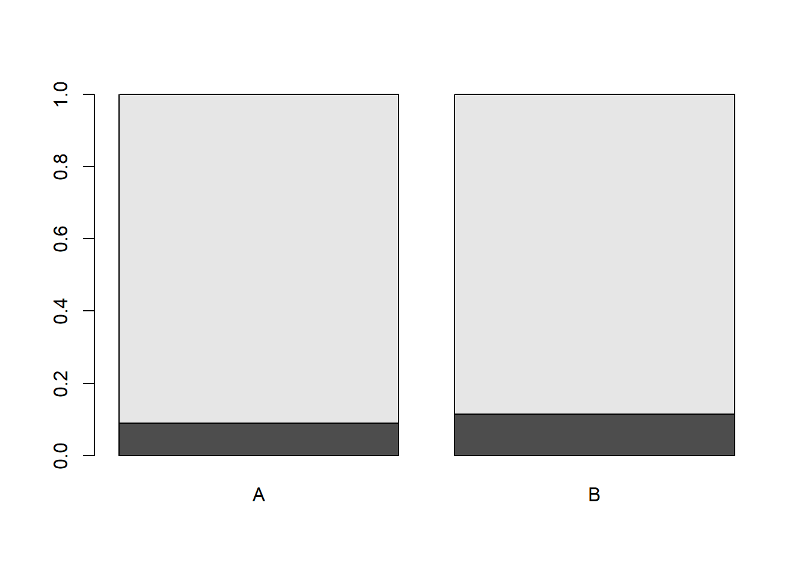
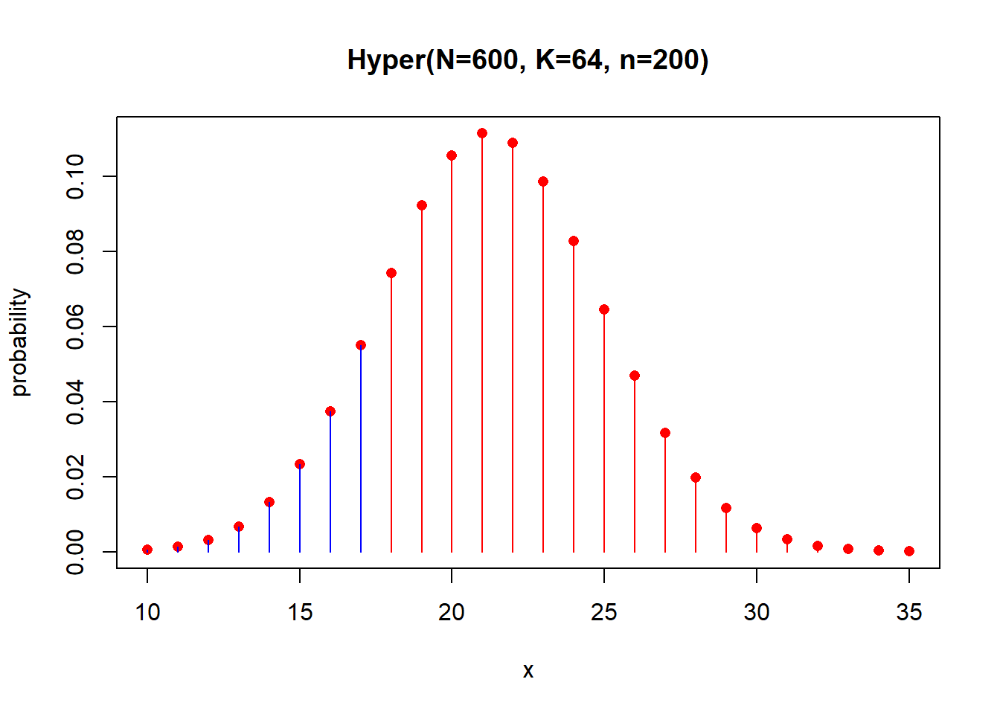
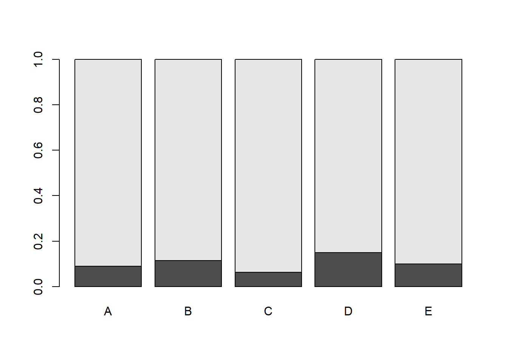

Chapter 15 Contingency tables
15.1 Objective
In this chapter we will see how to test statistical independence between two discrete variables.
We will use the contingency table of conditional probabilities to derive the null hypothesis and test it with a \(\chi^2\) statistics.
We will also introduce the Fisher exact test for contingency tables
15.2 Difference between proportions
For disease surveillance, we want to know if more hepatitis C patients are being observed in hospital \(A\) than in hospital \(B\)?
Example (Hepatitis C) We write down the status of hepatitis C of a patient who goes to hospital A. In hospital \(A\) we observe
\[1, 0, 0, 1, 0, ... 0\]
where the first patient has hepatitis and the last one did not.
Hepatitis C diagnosis is a Bernoulli trial \(X\) with outcomes (0:no hepatitis and 1:hepatitis) that has a probability mass function
\[X_A \rightarrow Bernoulli (p_A)\] The parameter \(p_A\) is the probability of hepatitis at hospital \(A\).
We also write down the hepatitis status of a patient who goes to hospital B, and observe
\[0, 0, 1, 0, 0, ... 1\]
Diagnosis at this hospital is a Bernoulli trial with probability \(p_B\)
\[K_B \rightarrow Bernoulli (p_B)\]
15.3 Difference between proportions
In this study one random experiment has two outcomes: \((disease, hospital)\). That is the status of a patient is determined by two variables both of which are categorical
These are the possible outcomes of each variable:
- \(Disease \in\{no, yes\}\)
- \(Hospital \in \{A,B\}\)
Repeating the experiment \(n\) times, the data for the first five patients look like
## Hospital Disease
## 1 A yes
## 2 A no
## 3 B no
## 4 A yes
## 5 A noThe first patient was from hospital A and had hepatitis C.
Question:
Our research question is to find whether \(Disease\) and \(Hospital\) are statistically independent variables. We want to know if there is more infections in one hospital than another and perhaps emit an alarm to the affected hospital. Let’s formulate the hypothesis contrast.
15.4 Contingency table of conditional probabilities
Our experiment is such that we make diagnosis conditioned to each hospital. We then have the conditional probability table
| Hospital: \(A\) | Hospital: \(B\) | |
|---|---|---|
| Hepatitis (no) | \(P(no|A)=(1-p_A)\) | \(P(no|B)=(1-p_B)\) |
| Hepatitis (yes) | \(P(yes|A)=p_A\) | \(P(yes|B)=p_B\) |
| sum | \(1\) | \(1\) |
We want to know if for example the probability of infection in hospital \(A\) is different from the probability of infection in hospital \(B\), and therefore the hypothesis contrast is
- \(H_0: p_A=p_B\) (status quo) no differences of infection probability between hospitals.
- \(H_1: p_A\neq p_B\) (research question) the infection probabilities are different between hospitals.
15.5 Test for the difference between proportions
If we consider that the null hypothesis is true then, then the hospital tag (“A” or “B”) is statistically independent from whether a diagnosed of hepatitis C was observed. Remember the definition of statistical independence: if infection is independence of hospitals then \[p=P(yes)=P(yes|A)=P(yes|B)\] Therefore the hypothesis contrast is:
- \(H_0: p=p_A=p_B\)
- \(H_1: p\neq p_A \neq p_B\)
We do not know the values of \(p\), \(p_A\) and \(p_B\). Therefore we need to estimate them from the data.
Example (Hepatitis C)
We perform diagnostic surveillance in both hospitals and found
Hospital \(A\) included in the study a total of \(n_A=200\) and observed \(18\) infections.
Hospital \(B\) included in the study a total of \(n_B=400\) and observed \(46\) infections.
For hospital \(A\) we have that the estimated probability of infection is the relative frequency of infections, that is
- \(\bar{x}_A=\hat{p}_A=18/200=0.09\)
Consequently, for hospital \(B\), we have that the estimated probability of infection is
- \(\bar{x}_B=\hat{p}_B=46/400=0.115\)
If the null hypothesis is true then the rate of infection \(p\) can be estimated from either hospital, or from the two hospitals taken together, as if they were same hospital:
\[\hat{p}=\frac{n_A\bar{x}_A+n_B\bar{x}_B}{n_A+n_B}=\frac{18+46}{200+400}=0.1066667\]
15.6 \(\chi^2\) test
For the first hospital the standardized error observed when we estimate the rate of infection \(\hat{p}\) using only the average rate of infections at this hospital is
\[Z_A= \frac{\bar{X}_A-\hat{p}}{\sqrt\frac{\hat{p}(1-\hat{p})}{n_A}}\]
The error made in hospital \(B\) is
\[Z_B= \frac{\bar{X}_B-\hat{p}}{\sqrt\frac{\hat{p}(1-\hat{p})}{n_B}}\]

In the plot, each cross is a diagnosis (either \(1\) or \(0\)) the dotted line is the estimated probability \(\hat{p}\) of both hospitals taken together and the dots are the estimated probabilities of each separate hospital.
The conditional probability table by hospital is
| Hospital: \(A\) | Hospital: \(B\) | |
|---|---|---|
| Hepatitis (no) | \(0.910\) | \(0.885\) |
| Hepatitis (yes) | \(0.090\) | \(0.115\) |
| sum | \(1\) | \(1\) |
Which we can illustrate in a barplot

The probabilities of infection within each hospital are different but look very similar. Is the difference significant, although small?
Using the CLT, the total standardized squared error from both hospitals is
\[W= Z_A^2+Z_B^2\rightarrow \chi^2(1)\]
which is a random variable that follows a \(\chi^2\) distribution with 1 degree of freedom.
Note: We formulated the null hypothesis from the statistical independence given by conditional probabilities. Another alternative is to formulate it from the product of the marginals.
Therefore, the hypothesis test can also be written as
- \(H_0:P(yes, A)=P(yes)*P(A)\) (Disease and Hospital A are statistically independent as the joint probability is the product of the marginals)
- \(H_1:P(yes, A)\neq P(yes)*P(A)\) (Disease and Hospital A are statistically dependent)
If hospitals and infection status are truly independent from each other then one can show that the variable \(W\) above can also be computed as the sum of the squared errors that we make when we estimate the joint probabilities using the marginals (i.e. \(\hat{p}_{yes,A}=\hat{p}_{yes}\hat{p}_A\)), which we are allowed if the null hypothesis is true. Therefore the total standardized squared error of before can be re-written as:
\[W= \frac{(\hat{p}_{no,A}-\hat{p}_{no}\hat{p}_{A})^2}{\hat{p}_{no}\hat{p}_{A}}+\frac{(\hat{p}_{no,B}-\hat{p}_{no}\hat{p}_{B})^2}{\hat{p}_{no}\hat{p}_{B}}+\frac{(\hat{p}_{yes,A}-\hat{p}_{yes}\hat{p}_{A})^2}{\hat{p}_{yes}\hat{p}_{A}}+\frac{(\hat{p}_{yes,B}-\hat{p}_{yes}\hat{p}_{B})^2}{\hat{p}_{yes}\hat{p}_{B}}\]
If the observed value for \(W\) is a rare error from the null hypothesis, for a \(\chi^2\) variable, we then reject the null hypothesis.
Example (Hepatitis C)
When we compute the observed value of \(W\) we find
\[w_{obs}= \frac{0.09-0.1066667}{\sqrt{\frac{0.1066667(1-0.1066667)}{200}}}+ \frac{0.115-0.1066667}{\sqrt{\frac{0.1066667(1-0.1066667)}{400}}}= 0.87453\]
We can test whether this value is large under the null hypothesis. If the null is true this statistics is close to zero, otherwise is large. We can then compute the \(pvalue\) given by
\[pvalue=P(W \geq w_{obs}) =0.3497\]
or in Python
import numpy as np
from scipy.stats import chi2_contingency
# Create the 2x2 contingency table
observed = np.array([[182, 18], [354, 46]])
# Perform the chi-squared test
chi2, p, dof, expected = chi2_contingency(observed, correction=False)
print(f"Chi-squared statistic: {chi2:.4f}")
print(f"P-value: {p:.4f}")Chi-squared statistic: 0.8745
P-value: 0.3497This \(pvalue\) is not lower than the significance level \(\alpha=0.05\) and therefore we do not reject \(H_0\) and acept either
that the frequencies of hepatitis C are equal between hospitals
or, equivalently, that the frequency of hepatitis C is independent from hospital
or, equivalently, that the frequency of hepatitis C is not significantly associated with the hospital.
15.7 Fisher’s exact test
Another approach is Fisher’s exact test: Take a ballot for each of the \(N=600\) patients of both studies into an urn:
There are a total of \(N\) ballots:
- There are \(K=64\) ballots that have hepatitis C
- \(N-K=536\) ballots do not have hepatitis C
Then, if we take a \(n=200\) randomly selected ballots (similar in number to hospital \(A\)), we may ask: What is the probability of observing more than \(18\) patients with hepatitis C? Remember that \(18\) infections were actually observed. Therefore, we are asking how rare that observation in the case where the Hospital plays no role. That is the probability a more extreme observation under the null hypothesis, or put simply the \(pvalue\). More explicitly the hypothesis contrast is
- \(H_0: p_A \geq 64/600\)
The null hypothesis (status quo) assumes that hospital \(A\) has the same parameter of both hospitals together.
- \(H_1: p_A < 64/600\)
The alternative hypothesis assumes that the parameter of hospital \(A\) is lower than the parameter for both hospitals together
15.8 Hypergeometric distribution
The probability of obtaining \(x\) hepatitis C cases in a sample of \(n\) drawn from a population of \(N\) where \(K\) have hepatitis C is
\(P(X=x)=P(one\,sample) \times (Number\, of\, ways\, of\, obtaining\, x)\)
\[=\frac{1}{\binom N n}\binom K x \binom {N-K} {n-x}\]
\[X \rightarrow Hypergeometric(N,K,n)\]

If the observed value for \(x=18\) is a rare observation from the null hypothesis, we then reject the null hypothesis. The lower tail \(pvalue\) for an observation \(X=18\) is
\[pvalue=P_{hyper}(X \leq 18) =0.2147683\] In Python
from scipy.stats import hypergeom
# Calculate the hypergeometric probability
hypergeom.cdf(18, 600, 64, 200)Which is not lower than the significance level \(\alpha=0.05\) and therefore we do not reject \(H_0\) and conclude:
- that the frequency of hepatitis C is not significantly associated with the hospital.
The odds ratio gives us the strength of the of the change in the in the infection proportion between hospitals:
\[OR=\frac{p_A/(1-p_A)}{p_B/(1-p_B)}=0.76\]
It is a magnitude of the observed statistical association between hospital and disease. We use the \(OR\) to distinguish between the different cases
- When \(p_A\) is equal to \(p_B\) then \(OR=1\) (idependence of infection and hospital)
- When \(p_A\) is lower to \(p_B\) then \(OR<1\)
- When \(p_A\) is greater than \(p_B\) then \(OR>1\)
The way we report the \(OR\) in the case of the hospitals is: There was a decrease of \(24\%\) (\(1-0.74\)) in the risk of hepatitis C for hospital \(A\) in relation to hospital \(B\) but it was not statistically significant (\(pvalue=0.21\)).
This is how we compute it:
import numpy as np
from scipy.stats import fisher_exact
# Create the 2x2 contingency table
observed = np.array([[18, 182], [46, 354]])
# Perform the Fisher's exact test with "less" alternative hypothesis
odds_ratio, p_value = fisher_exact(observed, alternative="less")
print(f"Odds ratio: {odds_ratio:.4f}")
print(f"P-value: {p_value:.4f}")Odds ratio: 0.7611
P-value: 0.214815.9 Difference between several proportions
Now, we want to know if the frequency of hepatitis C is different across \(5\) difference hospitals.
We then formulate the hypothesis contrast:
- \(H_0: p=p_A=p_B=p_C=p_D=p_E\)
The null hypothesis (status quo) assumes that hospital (\(i=\{A,B,C,D,E\}\)) and disease (\(j=\{yes, no\}\)) are all independent and then they have the same infection rate.
- \(H_1: p\neq p_{A,B,C,D,E}\)
The alternative hypothesis assumed that at least one hospital is not independent from infection.
When we collect the data we can build a contingancy table for the observations
| \(A\) | \(B\) | \(C\) | \(D\) | \(E\) | |
|---|---|---|---|---|---|
| Hepatitis (no) | \(182\) | \(354\) | \(375\) | \(85\) | \(90\) |
| Hepatitis (yes) | \(18\) | \(46\) | \(25\) | \(15\) | \(10\) |
| sum | \(200\) | \(400\) | \(400\) | \(100\) | \(100\) |
We have that the standardized squared error from the null hypothesis can be written as:
\[W= Z_A^2+Z_B^2+Z_C^2+Z_D^2+Z_E^2\rightarrow \chi^2(4)\]
which is a random variable that follows a \(\chi^2\) distribution with \(4=5-1\) degrees of freedom (number of hospitals \(-1\)).
Each term in \(W\) is the squared standardized error observed when we estimate the rate of infection \(\hat{p}\) using only the average rate of infections at each hospital. And the average infections across hospitals is
\[\hat{p}=\frac{n_A\bar{x}_A+n_B\bar{x}_B+n_C\bar{x}_C+n_D\bar{x}_D+n_E\bar{x}_E}{n_A+n_B+n_C+n_D+n_E}=\frac{18+46+25+15+10}{200+400+400+100+100}=0.095\]
The computation of the observed standardized squared error is \[w_{obs}=10.381\]
For which we can test how rare an observation is, using a \(pvalue\)
\[pvalue=P(W \geq w_{obs}) = 0.03448\] These valeus can be obtained in Python with the following code
import numpy as np
from scipy.stats import chi2_contingency
# Create the 2x5 contingency table (adjust the data as needed)
observed = np.array([[18, 46, 25, 15, 10], [182, 354, 375, 85, 90]])
# Perform the chi-squared test
chi2_stat, p_value, dof, expected = chi2_contingency(observed)
print(f"Chi-squared statistic: {chi2_stat:.4f}")
print(f"P-value: {p_value:.4f}")
print(f"Degrees of freedom: {dof}")Chi-squared statistic: 10.3809
P-value: 0.0345The \(pvalue\) is lower than the significance level \(\alpha=0.05\) and therefore we reject \(H_0\) and conclude that: The frequency of hepatitis C is significantly associated with the hospital.
We can illustrate the result a conditinal frequency table by hospital or with a barplot. We see that Hospital C and D may have too low and too large infection rates
##
## A B C D E
## 0 0.9100 0.8850 0.9375 0.8500 0.9000
## 1 0.0900 0.1150 0.0625 0.1500 0.1000
15.10 Questions
1) The \(\chi^2\) test for contingency table is used to
\(\qquad\)a: test the associations of a categorial variable; \(\qquad\)b: test statistical independence between two categorical variables; \(\qquad\)c: test statistical independence between a continuous and a categorical variable; \(\qquad\)d: test significance of a categorial variable
2) In the Fisher test we compute the \(pvalue\) using
\(\qquad\)a: the central limit theorem; \(\qquad\)b: a conditional probability; \(\qquad\)c: the relative frequencies; \(\qquad\)d: a parameric model
3) The probability to heal from an injury without treatment is 0.6. The probability to heal from an injury with treatment is 0.8. What is the odd ratio of healing with treatment with respect of healing without it.
\(\qquad\)a: 0.376; \(\qquad\)b: 1.5; \(\qquad\)c: 2.666; \(\qquad\)d: 0.6666
4) The null hypothesis in testing for differences in proportions across different conditions assume
\(\qquad\)a: the different conditions for different proportions;
\(\qquad\)b: the same condition across different proportion;
\(\qquad\)c: different proportions across the conditions;
\(\qquad\)d: the same proportion across the conditions
5) if the \(pvalue\) is lower than \(0.5\) in a test of several proportions then
\(\qquad\)a: we accept that at least one proportion is different from the rest; \(\qquad\)b: We accept that all proportions are different between each other; \(\qquad\)c: We accept the all proportions are equal; \(\qquad\)d: We accept that there is one single proportion
15.11 Practice
Load hospital data (https://alejandro-isglobal.github.io/SDA/data/hospital.txt)
Test the hypothesis that the infection proportion at hospitals C and D are different. Use a \(\chi^2\) test and a exact Fisher test. Interpret the OR.
Make a bar plot
Test the hypothesis that the infection proportion at hospitals A, B and E are different.
Make a bar plot